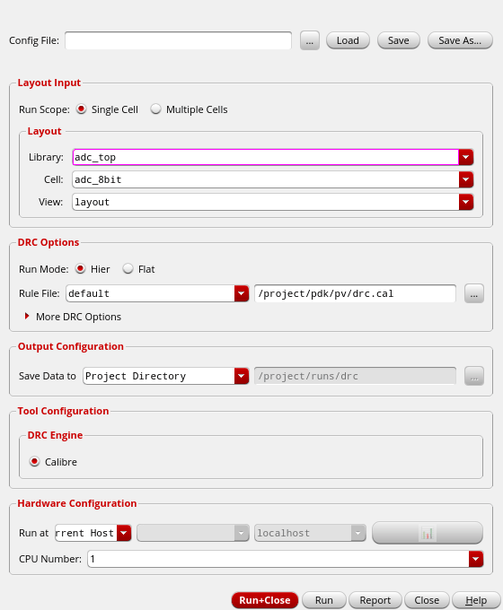
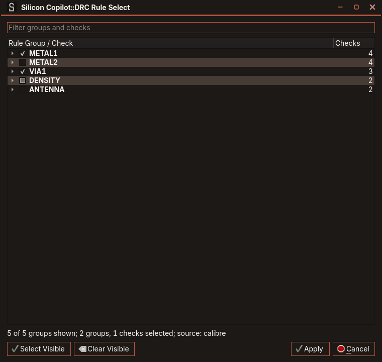

CAD FLOW / DESIGN RULE CHECK
DRC · 版图规则检查
使用 Calibre 检查 OA layout 或已有 GDS。先准备正确的工艺 runset，再选择输入、运行模式与结果目录。
图形界面：DRC 主表单


从 SiCo → DRC 打开。表单从上到下分为 Profile、Layout Input、DRC Options、Output、Tool 和 Hardware；初次使用时先展开并核对所有三角形区域，再运行。
| 页面/控件 | 详细说明 | 使用要点 |
|---|---|---|
| Config File + Load / Save / Save As… | 选择 DRC Profile；Load 回填业务选项，Save 覆盖当前文件，Save As… 新建文件。 | Profile 只保存可复用设置；运行目录、设计身份和最终 TOML 仍由本次 Run 生成。 |
| Run Scope | Single Cell 检查一组 layout；Multiple Cells 显示 Multiple Cell Mappings。 | 多 cell 模式共用同一规则、输出和硬件设置；每个映射单独生成任务。 |
| Multiple Cell Mappings | 报告表列出 library / cell / view；编辑区填写下一组身份，Add / Update 加入或更新，右键可删除选中映射。 | 只接受完整的 library / cell / view；重复身份不要手工制造。 |
| Layout / Library / Cell / View | 指定 OA layout 输入。OA 输入需要当前工程的 CDS_LIB 和 TECH_LAYER_MAP。 | 先确认 view 是 layout，且属于当前 PDK；不要用 symbol 或 schematic 代替。 |
| Run Mode | Hier 使用层次化运行并允许选择 CPU；Flat 固定 1 CPU。 | 按 runset 与设计规模选择；Flat 可能显著更慢且更占资源。 |
| Rule File 下拉与路径 | 下拉项来自 DRC_FILE 的显示名，路径字段指向实际 Calibre runset。 | 核对显示名和路径属于同一工艺版本；修改路径后 Rule Select 结果会失效。 |
| More DRC Options | 展开后显示 Rule Select 与 Customized SVRF Command。 | 不展开不代表选项生效；展开后逐项确认开关、文件与文本。 |
| Rule Select 开关、Select…、摘要 | 只运行选定的 rule group / check。开关关闭时使用完整 runset；开启后可打开选择窗口。 | 摘要必须与本次目标一致；空选择不能提交。详见下一小节。 |
| Customized SVRF Command | 在标准 runset 之外追加用户 SVRF 命令。 | 只填写已确认的工艺命令；不要用自定义片段掩盖 runset 缺失项。 |
| Save Data to + 路径 | 选择 Project Directory、Current Directory 或 Customize Directory，并显示最终输出根。 | 确认最末级路径和写权限；未设置 DRC_DB_DIR 时 Project Directory 可能落到当前目录。 |
| DRC Engine | 当前为 Calibre；实际可执行文件来自 PATH 与站点环境。 | 运行前用 command -v calibre 检查；MGC_HOME 不会自动选择程序。 |
| Run at / Queue / Host / LSF | Current Host 在本机执行；LSF Farm 允许选择队列和主机，LSF 按钮打开负载监控器核对选择。 | 队列/主机候选未加载完成时不要强行提交；使用已验证的 queue 与 host。 |
| CPU Number / Parallel Cells | Hier 模式选择 CPU；多 cell 模式设置同时处理的 cell 数。 | CPU 和并行数受队列槽位与许可证限制；并行数不是越大越快。 |
| Run+Close / Run / Report / Close | 运行后关闭、运行并保留、打开已有报告、只关闭表单。 | Report 只读取已完成结果；没有成功运行时不要用它判断 DRC 通过。 |


Rule Select 窗口的每个控件
| 控件 | 详细说明 | 使用要点 |
|---|---|---|
| Filter groups and checks | 按名称大小写不敏感地筛选规则组和检查项，保留匹配项的父组。 | 过滤只改变显示，不自动改变已选内容；筛选后仍要核对摘要。 |
| 规则树与复选框 | 父组三态表示子项全选、部分选择或未选；可逐项选择。 | 组和部分检查可以同时存在；重叠组会合并为一次选择。 |
| Select Visible | 选中当前过滤结果中可见的组和检查。 | 先缩小过滤范围，避免一次选中大量无关规则。 |
| Clear Visible | 清除当前可见项，不影响不可见项。 | 用于撤销错误过滤下的选择；不会删除 runset。 |
| 状态行 | 显示当前可见组数、总组数、已选组数、已选检查数及规则来源（可能标注 cached）。 | Apply 前确认来源和数量；TVF 展开失败时应检查 Calibre 而不是继续空选。 |
| Apply | 把选择写入结果文件并关闭窗口；空选择会提示并保持窗口。 | Apply 后主表单摘要更新；如果随后修改 Rule File，旧选择会失效。 |
| Cancel / 关闭窗口 | 不写结果，保留主表单原选择。 | 取消不会修改 runset 或已有运行目录。 |
准备工具与工艺文件
Bash · 在启动 Virtuoso 前配置
export DRC_FILE="default,$PDK_ROOT/pv/drc.cal;signoff,$PDK_ROOT/pv/drc-signoff.cal"
export DRC_DB_DIR="$PROJECT_ROOT/runs/drc"
export DRC_DEF_TOOL="Calibre"
# OA 输入才需要下列两项；路径必须与当前 PDK 匹配。
export CDS_LIB="$PROJECT_ROOT/cds.lib"
export TECH_LAYER_MAP="$PDK_ROOT/stream/streamOut.map"
command -v calibre strmoutcalibre 必须能从 PATH 找到。设置 MGC_HOME 并不会替 DRC 选择执行程序。已有 GDS 输入不需要再从 OA stream-out。
在 GUI 中运行
- 选择 SiCo → DRC。使用已保存设置时，先选择 Profile 并点击 Load。
- 选择 OA layout 的 library / cell / view，或选择 GDS 文件并填入其 top cell。
- 选择 DRC runset；需要缩小检查范围时使用 Rule Select。检查选中的 group / check 与工艺规则相符。
- 选择输出根目录及 Current Host 或 LSF Farm。Hier 模式可选 CPU；Flat 模式固定使用 1 CPU。
- 运行后查看日志和 DRC summary。成功完成工具调用后可以选择打开 Calibre RVE，查看违反规则的位置。
工具正常退出与“版图没有 DRC violation”是两个结论。交付前需检查 summary 与 RVE 的实际结果；仅有完成提示不足以判定设计规则通过。
Rule Select 的使用边界
普通 SVRF 可直接发现规则组。编译期 TVF 需要 Calibre 展开后分析，首次读取可能较慢；可用 CALIBRE_BIN 为规则展开单独指定工具，DRC_RULE_GROUP_CACHE_DIR 指定展开缓存。它们不改变主 DRC 的 Calibre 选择。
只有明确需要补充工艺命令时才填写 Custom SVRF，并检查最终命令与 foundry runset 的关系。团队常用设置应通过 Profile 保存。
命令行与结果
下面的 /path/to/run/drc.toml 指一次运行使用的完整配置，通常由 GUI 生成；不是仅含 Profile 标识的文件。
Shell · 检查计划、生成命令、运行与查看结果
drc run /path/to/run/drc.toml --dry-run
drc generate /path/to/run/drc.toml
drc run /path/to/run/drc.toml
drc report /path/to/run/drc.tomlgenerate 写出工具命令；--dry-run 不启动 EDA 工具，但仍可能准备运行目录与配置文件。实际 DRC 命令在 log/drc.cal，RVE 数据库为 db/drc/cal_drc.out。需要复核默认项时查看 log/flow-defaults/。
遇到问题时
| 现象 | 处理 |
|---|---|
| Runset 下拉为空 | 核对 DRC_FILE 格式与文件访问权限，重新启动读取新环境的 Virtuoso。 |
| OA 导出失败 | 检查 CDS_LIB、库/cell/view、TECH_LAYER_MAP，以及 strmout 与许可证环境。 |
| TVF 规则组读取失败 | 检查 Calibre 版本、展开日志与 runset 的 include 环境；不要把空规则列表当成不存在检查项。 |
| 结果目录无法创建 | 检查 DRC_DB_DIR 或自定义根的最近存在父目录是否可写。 |